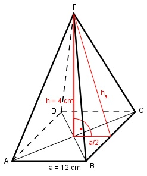

Aufgabe 184 Eine quadratische Pyramide hat eine Höhe h von 4 cm und eine Grundseite a von 12 cm. Wie groß ist ihre Oberfläche O?

Satz von Pythagoras im roten Dreieck: hs2 = h2 + (a/2)2 hs2 = 42 cm2 + 62 cm2 hs2 = 52 cm2 |√ hs = 7,2 cm Oberfläche O = = Grundfläche G + Mantelfläche M (4*Seitenfläche) O = G + M a * hs O = a2 + 4 * --------- = 122 cm2 + 2 12 cm * 7,2 cm + 4 * ------------------ 2 O = 122 cm2 + 2 * 12 cm * 7,2 cm O = 144 cm2 + 172,4 cm2 = 316,8 cm2